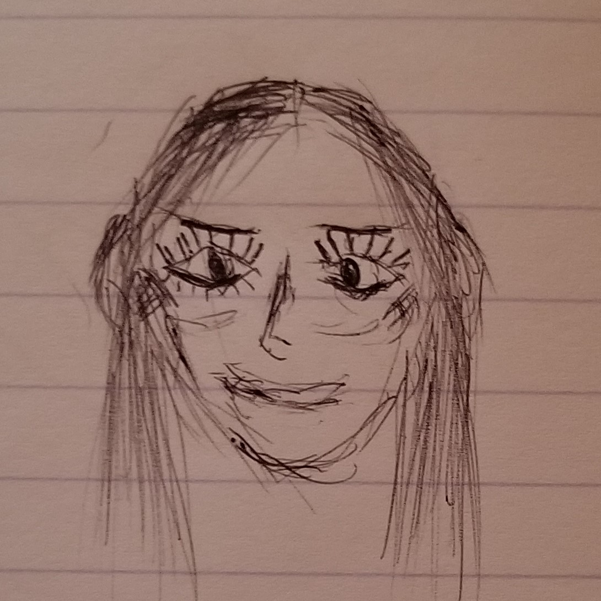
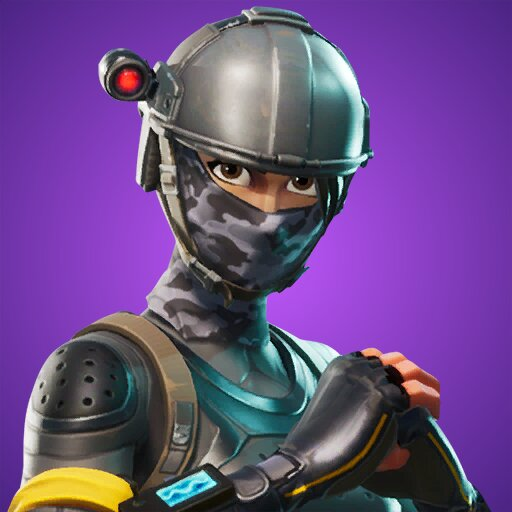
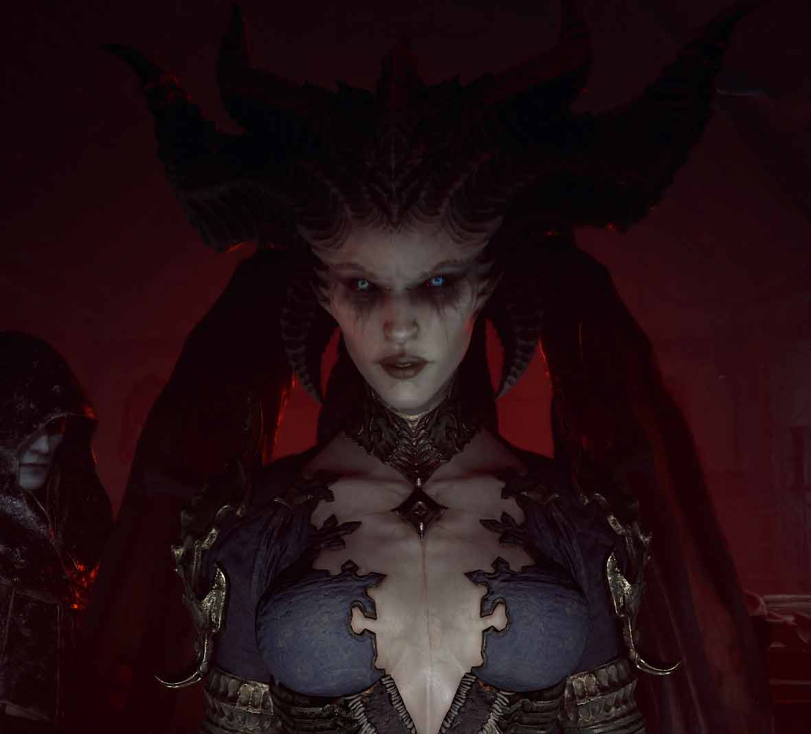
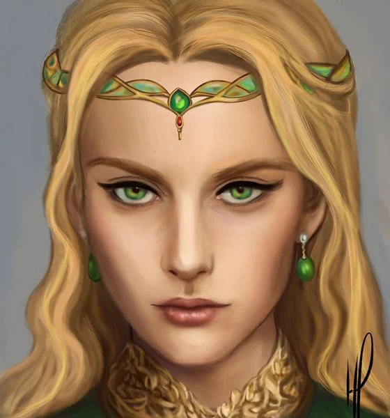

Preface
I hate myself, this is known to me. I've gone through various sessions of mental gymnastics to try and love myself, but they had all been vain. I guess me putting in the time to write this out shows that I still care about myself. Thats a nice thought.
I'm aware that I'm not alone in experiecing copious self-hate. Plenty of others would retain a similar mentality if they were in my position. The most common mechanism by which such people keep their self-hate at bay is to get someone else to love you instead of you having to do that loving yourself. This works, both in theory and practice.
Unfortunately for me getting someone to love me is unrealistic. It likely will never happens, and I'm against praying for that miniscule chance of finding that one woman who does. And that's still being generous, because as per BP we know what woman truly desire in a man (looks are quite literally everything -- I can't stress that enough. I've had a unconventional life which made this abundantly clear). I don't want a woman who would settle for me because I seem like a stable guy or have money, or even that I'm the best she could get. I wan't her to admire me, and that, to reiterate is unrealistic.
Introduction
Ok, being loved is a tried and true method is dissipating self-hate, but it's something I can't indulge in. But maybe there's a way I can... I will create my own girlfriend/wife/lover. In light of gaining the perspective that this "life" is but our conciousness strapped to a sensory data factory, this venture doesn't become as outlandish.
There are even some advatages to having a non-tangible lover. Namely, they can't accompany you whenever you desire it; and when your mind is trying to concentrate on something else they fade away naturally. They think of you what you want them to think of you. They act the way you want to act. It is bliss if properly managed (though this is tricky to do). I've found that if you draw her up yourself she becomes all the more real. Don't base her off a real person. What should be based off a real person is her voice though, so choose wisely and stick to it. Her voice is especially important to be to your liking because it's how she'll sound when she communicates to you through your inner monologue. Lastly, you should obviously detail her a lot; build up some personality traits and back stories. That what I'll be doing below.
Origianlly her image was concieved by the God(s) with the desitiny of becoming my loving and caring wife; however, it was later decided that her being was too perfect for the inhabitance of this world. As such, it was decided that she would proceed directly into the afterlife, effectively short circuiting life. And there she waits for me, with everlasting patience and desire to eventually converge with me. In the meantime, she lusts to dwell in my conciousness.
About Hera
Her name is Queen Hera and she is a Godess to me. Of course she is not *the* Hera, but I like to treat her as if she was.
My drawing of her:

Funnily enough, had she been brought into this world, she would've ended up my sister (I condemn incest, but I can't let morals obscure my understanding of Gods will). Plus, she's not "Real" so it makes no matter anyways.
Her voice is so serene it's undescribable in terms of pitch and tone. Every time she speaks to me, my mind goes quiet and I get goosebumps. Her voice is feminine and yet it conveys so much power and dominance. She is stronger than me in everyway, but even still, she allows me to to retain my masculine dominance in our relationship -- though she is not always consistent in this.
She takes a great likeing to cosplaying. Here are some of the people which she's cosplayed as in the past:


